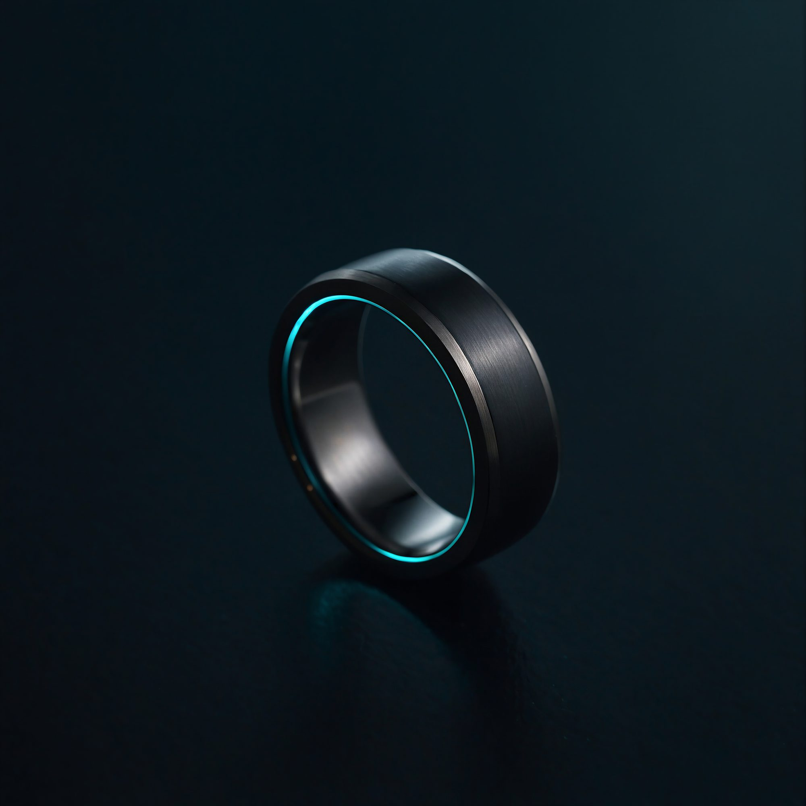
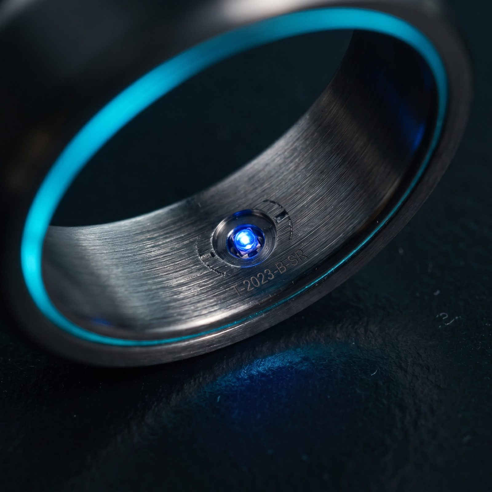
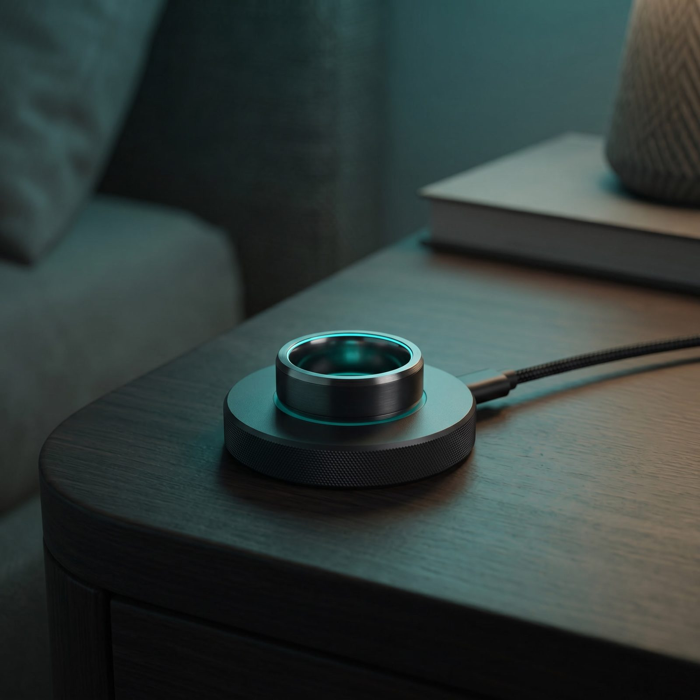

Case /07 · Konzeptstudie · Web-Demo
Ein erfundener Titan-Schlafring, inszeniert als scroll-choreografierte Produktseite. Von der Nacht in den Morgen.
Die Demo live erleben →Ein Produkt, das es nicht gibt, in einer Scroll-Minute zum Leben erweckt. Sleep, engineered.
Ein Render aus Leonardo wurde zum Master. Jeder weitere Shot referenziert ihn, damit überall derselbe Ring sitzt. Seedance macht aus dem Standbild eine Rotation.
Das Ring-Video wird nicht abgespielt. Der Scroll setzt seinen Zeitpunkt Frame für Frame, so dreht sich der Ring genau im Takt der Bewegung.
Buchstaben fallen, ein Panel steigt von unten, ein 3D-Text-Drum rotiert durch das Manifest. Alles an eine einzige Scroll-Position gebunden, ganz ohne Framework.


Am Anfang stand eine Frage: Wie professionell wirkt eine Produktseite, wenn niemand ein echtes Produkt liefert? Die Antwort war, selbst eines zu erfinden.
LULL ist ein Schlafring aus Titan. Er liest die Nacht und weckt in der leichtesten Phase. Marke, Bildwelt und Texte entstanden in einem Zug. Dunkles Indigo mit einem teal Glimmen, ein warmer Sonnenaufgang als Ziel.
Die Bilder kamen aus Leonardo. Ein Master-Render wurde festgelegt, alle weiteren Shots referenzierten ihn, damit der Ring überall gleich aussieht. Seedance verwandelte das Standbild in eine langsame Rotation.
Den Rest übernahm der Code. Eine eigene Scroll-Engine bindet Video, Text und Bilder an die Scroll-Position. Das Ring-Video scrubbt Frame für Frame, die Headline zerfällt in Buchstaben, ein Panel steigt auf und ein Text-Drum dreht sich durch das Manifest.
LULL gibt es nicht zu kaufen. Als Demo zeigt es in einer Minute, wie Konzept, Bildwelt und Code zu einem Produktgefühl verschmelzen.
Ein Produktlaunch, den es nie gab. So kann sich Software anfühlen, bevor sie existiert.